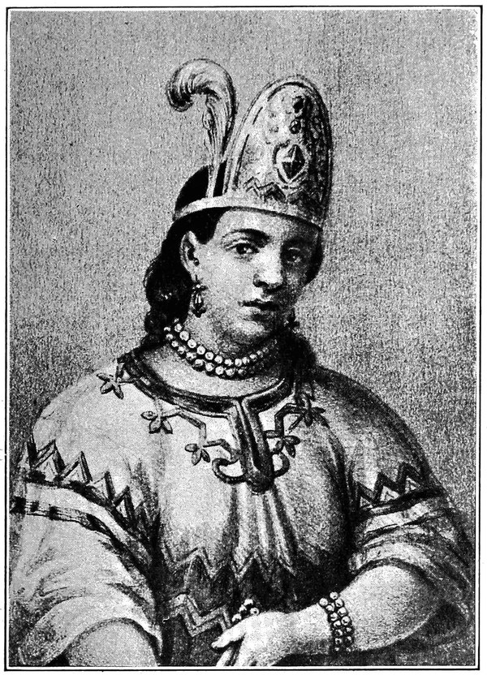

THE TONGUE
Doña Marina, the enslaved Nahua interpreter of the conquest, whose technique translates bindings themselves — under her translation, spoken terms, intended terms, and Heaven's reading become one text.

THE TONGUE
Doña Marina, the enslaved Nahua interpreter of the conquest, whose technique translates bindings themselves — under her translation, spoken terms, intended terms, and Heaven's reading become one text.
Feature map
Level-by-level features, as the figure refined them.
The Tongue
Passive.
Tier IV · Support · suggested CE ability CHA · Primary verb: Render. Under her translation, spoken terms, intended terms, and Heaven's reading become one text. The Tongue does not read minds — it renders what is said or sworn perfectly understood. Nothing said in her hearing can hide behind language.
She speaks and understands all languages. Willing creatures within 30 ft of her understand each other regardless of language. (Between tongues, she is the bridge.)
I Render It Plain
Reaction · 1 CE.
When a creature within 60 ft casts a spell or activates a named technique feature that would force a saving throw or attack roll against her allies, she translates the working aloud: her allies have advantage on saving throws against it, or +2 AC against its attack rolls, until the end of the current turn. She must perceive the working. (Translated, a curse arrives with its meaning attached. Meaning can be dodged.)
Terms, Stated
Action · 2 CE.
One willing creature within 60 ft that is charmed, frightened, or under a magically binding agreement immediately repeats the saving throw against the effect with advantage, as she renders its true terms. (No one she stands beside is bound by words they did not understand.)
The Gap Is Audible
Passive.
She always knows when a spoken statement's literal words diverge from its intended meaning — she hears the gap, not the thought. Deception checks against her have disadvantage, as do Deception checks against her allies within 30 ft. (Not mind reading. She hears the seam where the lie is stitched.)
The Common Text
Action · 3 CE · 1 minute (concentration).
Up to PB willing creatures within 60 ft enter the common text: they share perfect silent communication (complex plans as a free action); when one takes the Help action, the helped roll gains an additional 1d4; and when one member fails a saving throw against being charmed or frightened, another member within the text may use its reaction to grant a reroll. (One text. One party.)
Translate the Wound
Action · 2 CE · usable 3 times per long rest.
One willing creature within 30 ft regains 2d8 + CHA modifier hit points and may immediately attempt a saving throw against one condition affecting it, with advantage. (The wound, understood, loosens.)
Heaven's Reading
Action · 5 CE · once per short rest.
She speaks one active binding vow, geas, or magical agreement affecting a creature within 60 ft as Heaven reads it: all creatures within 60 ft learn its exact terms, price, and conditions. (Three texts become one text.)
Maximum, Domain, or equivalent.
Capstone material.
Maximum: The First Word and the Last
No creature within 120 ft can speak falsely about a vow, bargain, or binding — attempts come out as the true terms. As a bonus action on her turns, she may translate one ongoing enchantment or charm on a willing creature within 60 ft into plain meaning: the affected creature makes a Charisma saving throw with advantage; on a success, the effect ends. (The lies come out as truth. The bindings come undone.)
Where Every Word Is Weighed
A parley chamber with no shadows in the language. Inside, the sure-hit is One Text — every spoken statement is heard in its true meaning by all present: Deception is impossible inside (checks automatically fail). Hostile creatures casting spells with verbal components inside must speak the spell's true effect aloud as they cast it, and allies have advantage on saving throws against all spells cast inside the domain. A creature may choose silence instead — say nothing, and the text cannot render you. (The willing-decline valve: Heaven does not compel speech.)
- Clash points
- 800
- Burnout
- 5 rounds
- Duration
- 2 minutes
- Radius
- 50-ft radius
- Activation ✦
- full-turn action
- CE cost ✦
- 20
✦ Canon: figure Domains are Specific Domains — the stated profile governs, not the player point-unlock table.
The Tongue Remains
Magical silence and effects that would rob her of speech fail against her. Once per long rest, when a word-based hostile effect (command, suggestion, power word, a curse spoken aloud) targets her, she may use her reaction to translate it into plain meaning: it ends on her, and she learns its exact terms. (Five hundred years of men have tried to use her tongue against her. The tongue remains hers.)
Build-defining options.
This technique grants Innate Technique Feats — hand-authored applications of the figure's art, available in the builder's feat picker when you select this technique.
Edge cases and shared systems.
Campaign canon notes